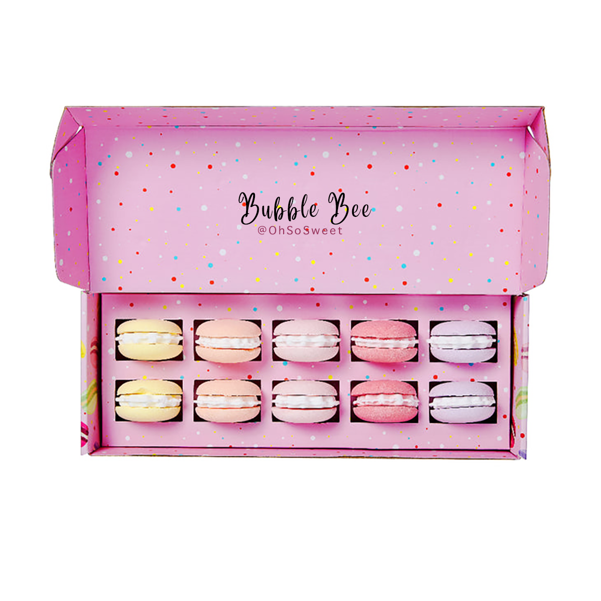

BubbleBee

We've been working on this special recipe for years to give you the most luxuriously sweet experience when taking a bath with our special bath bombs.
This video showcases how bath bombs are used and how water magically changes the colour depending on the type of bath bomb!
Created with love and passion, each bath bomb consists of your favourite childhood memories scents.
Our premium and limited box contains 10 beautifully scented bath bombs with very unique fragrances!
ONLY FOR £14.99 AND GET ONE FREE FOR YOUR BESTIE!